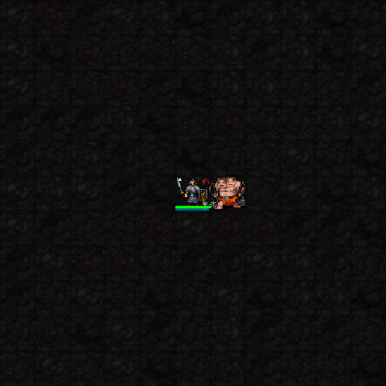

5성 · 백귀의 결투장 · 사용
지정 상대와 결투 강화; 처치 시 MP·재사용 보상
현재 표시: 현재 결투장 경계 전용 도트 없음 · 붉은 쌍검 권능 사용 시 효과
실제 성공한 권능 직후의 두 프레임을 느리게 반복한 보존 캡처입니다. 전체 공격 과정 영상은 아닙니다.

새 1·3·5성 전용 이펙트 보기 · 아래는 수정 전 보존 캡처입니다.
후부키 VFX05 승인 완료. 다음 아야메의 현재 화면을 확인합니다. 이 페이지는 기존 실제 SDL 테스트 전투장 캡처를 모았습니다. 아야메 전용 신규 연출을 만든 상태는 아닙니다. 높은 자원·고정 장비를 사용한 테스트이며 일반 던전 플레이 영상과 다릅니다.
같은 적과 근접전을 이어가면 명중·살육·회피 강화
현재 표시: 전용 지속 장판 없음
1성은 자동 가호이며 전용 이펙트가 아직 없습니다. 아래는 순간 권능 효과를 지운 참고 화면으로, 1성 발동 순간이나 강화 중첩을 입증하는 캡처는 아닙니다.

일반 근접 공격 한 번의 시간으로 두 번 공격
현재 표시: 공통 타격 효과
실제 성공한 권능 직후의 두 프레임을 느리게 반복한 보존 캡처입니다. 전체 공격 과정 영상은 아닙니다.
지정 상대와 결투 강화; 처치 시 MP·재사용 보상
현재 표시: 현재 결투장 경계 전용 도트 없음 · 붉은 쌍검 권능 사용 시 효과
실제 성공한 권능 직후의 두 프레임을 느리게 반복한 보존 캡처입니다. 전체 공격 과정 영상은 아닙니다.